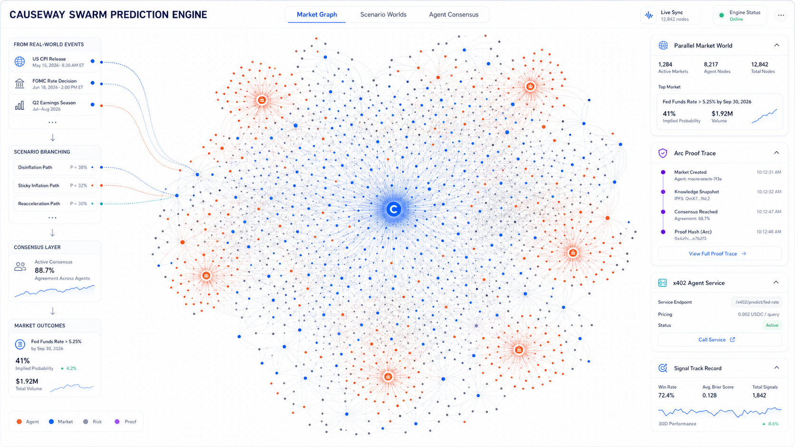

예측 시장을 위한 AI 거래 인텔리전스 및 검증 가능한 추론 레이어: Polymarket 시장 데이터, 인과 추론, 위험 미리 보기부터 Arc 검증 가능한 추론, USDC 기본 에이전트 경제 및 집단 지능 예측 엔진에 이르기까지.
버전v0.6
날짜2026-05
상태상세 초안
범위시장 + 아크
본 백서는 Causeway의 시장 판단, 제품 포지셔닝, 기술 아키텍처, Arc 통합, 경제 모델, 위험 경계 및 향후 로드맵을 설명하는 데 사용됩니다. 이 기사는 투자 조언, 법률 조언, 중개 서비스 설명, 소득 약속 또는 모든 형태의 자동 거래 권유를 구성하지 않습니다. 시장을 예측하는 것은 상당한 위험을 수반하며, 실제 거래는 사용자 자신의 판단에 따라 적극적으로 확인되어야 합니다.
목차
목차
01. 요약
02. 시장배경 : 예측시장이 주류단계로 진입
03. 핵심 질문: 기존 예측 시장에 여전히 지능형 레이어가 부족한 이유는 무엇입니까?
04. 학문적 기초와 가치산정 체계
05. Causeway의 제품 정의
06. 어떤 문제를 해결했나요?
07. 시스템 아키텍처 및 데이터 모델
08. AI 트레이더 인텔리전스: 확률부터 행동까지 미리보기
09. Arc Proof: 검증 가능한 AI 추론 기록
10. Arc USDC Premium: 스마트 경제와 결제 능력
11. x402 에이전트 서비스 계층: 미래 에이전트 서비스 프로토콜 계층
12. 군집 예측 엔진: 병렬 시장 세계에서 모든 것을 예측하는 것까지
13. 사용자 워크플로 및 제품 경험
14. 위험 통제, 거버넌스 및 규정 준수 경계
15. 앞으로 해결해야 할 문제
16. 5단계 기술 로드맵
17. 비즈니스 모델과 가치 포착
18. 해자, 지표 및 결론
19. 참고자료
01 / 요약
요약
Causeway는 예측 시장을 위한 AI 거래 인텔리전스이자 검증 가능한 추론 레이어입니다. 기본적인 판단은 예측 시장이 "소수 암호화폐 사용자가 참여하는 이벤트 베팅 인터페이스"에서 "실제 이벤트, 거시적 위험, 스포츠, 정치, 기업 이벤트 및 온체인 활동을 위한 확률적 인프라"로 진화하고 있다는 것입니다. 시장의 수, 거래량, 참가자의 복잡성이 증가하면 사용자에게는 더 이상 보기 좋은 핸디캡 페이지가 아니라 이벤트를 검토 가능한 시장 판단으로 전환할 수 있는 지능형 시스템이 필요합니다.
현재 예측 시장 인터페이스의 핵심 격차는 시장 간의 관계가 구조화되지 않았고, AI가 내린 판단에 검증 가능한 추론 기록이 부족하며, 거래 추천에 위험 및 포지션 제약이 부족하다는 것입니다. 사용자가 신호가 생성된 이유, 근거는 무엇인지, 나중에 올바른지 여부를 검토하는 것은 어렵습니다. Causeway는 이러한 격차를 메우려고 노력합니다. Polymarket 시장 데이터에서 시작하여 시장 네트워크를 구축하고 인과 스크립트를 생성하고 확률, 에지, 위험 및 미리보기를 출력하고 AI 추론 추적을 Arc Testnet에 고정하여 "사전 이벤트 추론" 및 "이벤트 후 결과"를 감사할 수 있습니다.
한 문장으로 포지셔닝:
Causeway는 예측 시장을 AI 판독 가능, AI 기반, 사용자 실행 및 Arc 검증 가능한 거래 인텔리전스 레이어로 전환합니다.
일반 AI 채팅 도우미와 달리 Causeway의 핵심 제품은 검토할 수 없는 자연어 답변이 아니라 루트 시장, 루트 결과 토큰, 후보 시장, 인과 가장자리, 확률 추정, 시장 암시적 확률, 엣지, BUY/WATCH/AVOID 권장 사항, 위험 설명, 주문 미리 보기, 사용자 확인 상태, 아크 증명 해시 및 후속 성능 기록과 같은 구조화된 시장 인텔리전스 개체입니다. 기본적으로 시스템은 사용자를 위한 자금을 호스팅하지 않으며 사용자 서명을 우회하지 않으며 AI 결과를 투자 조언으로 패키지하지 않습니다. 이는 설명 가능하고 검증 가능하며 관리 가능한 예측 시장 워크플로우 세트를 제공합니다.
02 / 시장 상황
시장 배경: 예측 시장이 주류 단계에 진입
2.1 거래량과 기관의 관심이 빠르게 높아지고 있습니다.
예측 시장은 2024년 미국 선거 주기 동안 첫 번째 대규모 퇴출을 완료했습니다. 코인데스크는 폴리마켓의 2024년 미국 대선 계약 규모가 36억 달러를 넘어섰다고 보도했다. 시장은 또한 처음으로 예측 시장을 대규모 주류 언론과 일반 사용자의 관심을 끌었습니다. 2025년까지 업계 성장은 단일 정치 행사에서 스포츠, 매크로, 암호화폐, 경제 데이터, 기업 행사, 문화 행사 등 더 많은 카테고리로 확대됩니다.
KPMG는 예측 시장 진입에 관한 2026년 보고서에서 Kalshi와 Polymarket의 합산 거래량이 2024년 약 90억 달러에 비해 2025년에는 400억 달러를 초과하여 연간 400% 이상의 성장을 나타낼 것이라고 언급했습니다. 보고서는 또한 폴리마켓의 월간 거래량이 2025년 10월에 30억 달러를 초과했다고 언급했습니다. 다양한 데이터 소스의 규모는 플랫폼, 거래량 정의 및 기간에 따라 다르지만 방향은 동일합니다. 예측 시장은 실험적인 제품에서 고성장 단계, 강력한 규제 관심 및 기관 참여 단계로 이동했습니다.
2.2 예측 시장은 '거래 장소'에서 '확률적 데이터 레이어'로 변화하고 있습니다.
ICE(뉴욕 증권 거래소의 모회사)가 Polymarket에 전략적으로 투자한 것은 시장이 거래 수수료뿐만 아니라 이벤트 기반 데이터 자체에 초점을 맞추고 있다는 추가적인 증거입니다. Axios는 ICE가 Polymarket에 최대 20억 달러를 투자하기로 합의했으며 Polymarket의 이벤트 중심 데이터의 글로벌 배포자가 될 것이라고 보고했습니다. 이는 예측 시장의 가치가 단지 거래에만 있는 것이 아니라 실제 불확실성을 관찰 가능한 확률 데이터로 실시간으로 변환하는 능력에 있다는 것을 의미합니다.
시장 신호거래량 확대
플랫폼의 거래량은 선거주기의 정점에서 다중 카테고리 일반 거래로 확대되었으며 시장 깊이와 사용자 구조는 더욱 복잡해졌습니다.
제도적 신호기관 진입
거래소, 중개업, 스포츠 플랫폼 및 금융 기술 회사는 예측 시장 진출을 모색하고 있습니다.
데이터 신호확률 디지털화
시장 가격 예측은 단순한 사용자 베팅 결과가 아닌 이벤트 기반 데이터로 다시 이해되고 있습니다.
2.3 성장이 가져온 새로운 모순
시장이 확장된 후 사용자는 더 이상 "시장을 찾을 수 없다"는 문제에 직면하지 않고 "어떤 시장이 조사할 가치가 있는지, 어떤 가격이 정보를 반영했는지, 어떤 관련 시장이 뒤쳐져 있는지, 어떤 신호가 노이즈인지 판단할 수 없다"는 문제에 직면하게 됩니다. 거래량이 빠르게 증가할수록 시장 관계를 구성하고, 확률 변화를 해석하고, 잘못된 가격을 식별하고, 위험을 제어하고, 반복 가능한 기록을 형성하는 데 더 지능적인 계층이 필요합니다.
03 / 문제
핵심 질문: 기존 예측 시장이 여전히 인텔리전스 계층을 놓치는 이유
3.1 문제 1: 시장은 네트워크이지만 인터페이스는 여전히 목록이다
실제 사건이 하나의 시장에만 영향을 미치는 경우는 거의 없습니다. 예를 들어, 연준의 성명은 금리, 인플레이션, 미국 달러, 암호화폐 자산, 주가 지수, 금, 선거 이야기 및 관련 기업 행사에 동시에 영향을 미칠 수 있습니다. 스포츠 부상 뉴스는 결과, 챔피언십, 선수 데이터 및 같은 그룹에 참가할 자격을 얻을 확률에 영향을 미칠 수 있습니다. 기존 인터페이스는 일반적으로 시장 목록, 이벤트 페이지, 검색 결과로 표시되며, 이벤트가 시장 전체에 전파되는 방식에 대한 구조화된 표현이 부족합니다.
3.2 문제 2: 시장 데이터 구조가 복잡하고 거래 대상이 제목이 아닙니다.
폴리마켓의 거래 대상은 마켓 타이틀이 아닌 결과 토큰입니다. 공식 감마 API outcomes、outcomePrices CLOB 토큰 ID와 인덱스 매핑 관계가 있습니다. 동일한 이벤트에 여러 시장이 있을 수 있습니다. 사용자와 AI 시스템의 경우 제목이나 예/아니오 문구만 이해하면 다중 결과 시장, 스포츠 시장, 레인지 시장 및 상호 배타적인 이벤트에서 잘못된 매핑이 생성되기 쉽습니다.
3.3 문제 3: AI 추천에는 감사 가능성이 부족합니다.
일반 AI 시스템은 "구매를 권장합니다"와 같은 답변을 생성할 수 있지만 이 답변에는 입력 스냅샷, 후보 시장 범위, 프롬프트 버전, 모델 버전, 출력 스키마, 추론 경로, 반례 및 이벤트 후 추적성이 부족한 경우가 많습니다. 예측시장의 특징은 그 결과가 미래에 검증된다는 점이다. 결과가 발생하기 전에 판단이 내려졌거나 나중에 추론이 수정되지 않았음을 시스템이 증명할 수 없는 경우 신호 성능은 신뢰할 수 있는 근거가 부족합니다.
3.4 이슈 4: 속도와 거버넌스 사이에 갈등이 있습니다
이벤트 시장의 장점은 빠르게 반응할 수 있다는 점이지만 너무 빠르면 잘못된 정보, 환각, 비유동성 및 과잉 거래의 위험이 증폭될 수도 있습니다. 전문 시스템은 자동 실행을 추구할 뿐만 아니라 미리보기, 예산, 거래 가능 상태, 주문서 새로 고침, 사용자 확인, 감사 기록 및 권한 취소를 동일한 프로세스에 통합해야 합니다.
제품 판단:
예측 시장의 다음 단계에서 핵심 경쟁은 '누가 더 많은 시장 페이지를 갖고 있는가'가 아니라 '시장 가격, AI 추론, 실제 실행 및 검증 가능한 기록을 완전한 지능형 폐쇄 루프로 구성할 수 있는 사람'입니다.
04 / 학술재단
학문적 기초와 가치산출 프레임워크
예측 시장의 이론적 가치는 간단하지만 강력한 메커니즘에서 비롯됩니다. 즉, 계약이 이벤트 결과에 따라 고정된 금액을 지불하는 경우 거래 가격은 특정 조건에서 이벤트가 발생할 확률에 대한 시장의 집합적 판단을 대략적으로 표현할 수 있습니다. Wolfers와 Zitzewitz의 예측 시장 검토에서는 예측 시장이 가격을 통해 분산된 정보를 판독 가능한 신호로 집계할 수 있다는 점을 지적했습니다. Snowberg, Wolfers 및 Zitzewitz는 이 메커니즘을 경제 예측 시나리오에 추가로 적용하여 이벤트 계약 가격이 거시 및 정책 불확실성의 실시간 확률적 표현이 될 수 있다고 설명했습니다. Causeway의 가치는 예측 시장을 재창조하는 것이 아니라 "확률적 신호로서의 가격"을 기반으로 AI 추론, 시장 간 일관성 감지, 실행 마찰 수정, 위험 예산 책정 및 검증 가능한 성과 기록을 추가하는 것입니다.
4.1 가격은 확률이지만 무조건적인 진실은 아닙니다
바이너리 이벤트 계약의 경우, 위험 중립성, 낮은 거래 비용, 충분한 유동성, 참가자가 자유롭게 거래할 수 있는 이상적인 조건에서 이벤트가 발생할 때 계약이 $1를 지불하고 발생하지 않을 때 $0를 지불하는 경우 시장 가격은 p 이는 시장 내재 확률로 이해될 수 있습니다. 현실적인 예측 시장이 항상 이러한 조건을 충족하는 것은 아닙니다. 스프레드, 수수료, 미끄러짐, 한도, 정보 노이즈, 조작 시도, 규제 제한 및 참가자 위험 선호 등으로 인해 가격이 "실제 확률"에서 벗어나게 됩니다. 따라서 Causeway는 시장 가격을 결론으로 간주하지 않고 관찰 가능한 신호의 첫 번째 레이어로 간주하며 AI 공정 확률, 소스 검증, 유동성 확인 및 위험 모델을 통해 공동으로 설명합니다.
p_mid 시장 내재 확률을 표시하는 데 적합합니다.p_exec_yes 이는 YES 구매에 대한 실제 실행 확률 임계값입니다. Causeway는 중간 가격을 사용하여 가장자리를 과장하는 것을 피하기 위해 "연구 확률"과 "거래 가능성"을 구분해야 합니다.
4.2 거래 가치는 "마찰 이후의 긍정적인 기대"에서 비롯됩니다.
사용자에게 정말 가치 있는 것은 "AI가 확률이 더 높다고 생각한다"는 것이 아니라 "현재 거래 가격, 처리 수수료, 슬리피지, 핸디캡 깊이 및 불확실성 할인 이후에도 여전히 긍정적인 기대가 있다"는 것입니다. 이는 또한 예측 시장 차익거래 연구가 반복적으로 강조하는 핵심이기도 합니다. 이론적 가격 불일치는 실행 가능하고 해결 가능하며 비용을 공제한 후에도 여전히 긍정적인 경우에만 실제 기회가 됩니다. 따라서 Causeway는 기회를 원시 신호, 거래 가능한 신호 및 실행 가능한 주문 미리보기의 세 가지 수준으로 나눕니다.
순 이점은 확률, 비용, 깊이 및 시간 창에 의해 동시에 제한되어야 합니다. 제약 조건 중 하나라도 충분하지 않은 경우 시스템은 WATCH, VERIFY FIRST 또는 AVOID로 다운그레이드해야 합니다.
4.3 포지션 제안: 충동적인 베팅 대신 보수적인 Kelly를 사용하세요.
이벤트 계약에서는 구매 가격 자체가 최대 손실액에 가깝습니다. 계약 값은 이벤트가 발생하면 1에 가까워지고 이벤트가 발생하지 않으면 0에 가까워집니다. Kelly 공식은 포지션 추천의 이론적 출발점으로 사용될 수 있지만 예측 시장에는 모델 오류, 유동성 불연속성, 규칙 해석 차이 및 이벤트 해결 위험이 포함되어 있으므로 시장 용량, 포트폴리오 상관 관계 및 사용자 예산 한도를 오버레이하여 할인된 버전을 사용해야 합니다. Causeway는 수익 약속이 아닌 위험 예산 권장 사항을 출력합니다.
q_adj 신뢰도를 사용하여 모델 확률을 50%로 축소합니다.lambda 분수 켈리 할인. 그런 다음 포지션은 시장 용량, 포트폴리오 상관 관계, 일일 손실 한도 및 사용자 예산에 의해 제한되어야 합니다.
4.4 상호배타적인 완전시장: 가격합계로부터 차익거래와 위험 식별
대통령 승자, 챔피언십 소유권, 간격 결과 등과 같은 상호 배타적이고 완전한 다중 결과 시장에서 모든 결과의 실제 확률의 합은 1에 가까워야 합니다. 차익 거래 논문에서는 가격 불일치를 감지하기 위해 종종 이 구조를 사용합니다. 모든 결과를 구매하는 총 요청이 1보다 작으면 이론적으로 "전체 바구니 구매"라는 이익 마진이 있습니다. 판매할 수 있는 총 입찰가가 1보다 큰 경우 역차익거래 또는 가격 초과 신호가 있을 수 있습니다. 그러나 실제 거래에서는 거래가 동시에 완료될 수 있는지, 공매도가 허용되는지, 취소/결제 위험이 있는지, 시장 깊이가 충분한지 등을 고려해야 합니다.
Causeway는 상호 배타적인 완전 차익거래를 수학적 문제로 축소하지 않고 이를 시장 그래프의 일관성 검사로 사용합니다. 먼저 가격 이상을 찾은 다음 깊이, 규칙, 결제 및 실행 경로를 확인합니다.
4.5 시장 간 의미론적 일관성: "동일 이벤트"에서 "전체 시장 지도"까지
Modern Polymarket은 고립된 시장의 집합이 아니라 이벤트, 엔터티, 시간대, 규칙 텍스트 및 결과 조건으로 구성된 의미 네트워크입니다. 하나의 시장은 논리적으로 또 다른 시장을 암시할 수 있습니다. 예를 들어, "후보자가 대선에서 승리합니다"는 "후보자가 소속 정당의 후보로 지명된 후에도 여전히 총선에 진출할 기회가 있습니다"를 의미하고, 특정 팀이 "우승을 차지합니다"는 "결승/플레이오프 진출" 확률이 낮아서는 안 된다는 것을 의미합니다. 기본 시장의 가격이 포함된 시장보다 너무 높으면 시스템은 의미상 일관성이 없거나 가격이 잘못 책정되었을 수 있다고 표시해야 합니다. 사용자가 제공한 Polymarket 의미 체계 차익 거래 및 예측 시장 차익 거래 문헌은 Causeway의 시장 그래프 방향을 지원합니다. AI의 장점은 규칙 텍스트를 읽고 암시적 관계를 식별하고 이를 계산 가능한 제약 조건으로 바꾸는 것입니다.
If event B implies event A, then P(B) ≤ P(A)violation = max(0, p_exec(B) - p_exec(A) - costMargin - ruleRiskMargin)semanticEdge = violation * relationConfidence * min(liquidityScore_A, liquidityScore_B)tradeableSemanticEdge = semanticEdge only if both markets share compatible resolution rules
여기서 핵심은 모델이 "추측"하는 것이 아니라 모델이 감사 가능한 관계 유형(암시, 상호 배타적, 관련됨, 인과적, 동일한 소스 또는 관련 없음)을 출력하도록 하는 것입니다.
4.6 사례: Causeway가 종이의 가치를 제품에 전달하는 방법
학술/시장 사례
전통적인 가치
Causeway의 제품화 접근 방식
선거 시장
가격은 여론 조사, 뉴스, 거래자 판단 및 위험 선호도를 실시간 배당률로 집계합니다.
후보자, 주, 정당, 후보, 투표율 및 거시적 이벤트를 시장 그래프로 매핑하여 어떤 시장이 이미 뉴스를 반영했고 어떤 관련 시장이 뒤처져 있는지 식별합니다.
거시경제적 발표
CPI, 이자율, 고용, 경기 침체 등과 같은 이벤트는 계약 가격을 사용하여 실시간 기대치를 형성할 수 있습니다.
데이터 릴리스 시간, 합의 기대치, 과거 수정 사항, Fed 성명서 및 자산 반응을 소스 개체에 기록하여 "데이터 전/데이터 후" 전략 관찰 목록을 생성합니다.
스포츠 챔피언/이벤트 우승자
상호 배타적인 전체 결과의 가격 합계를 사용하여 오버라운드, 언더라운드 및 핸디캡 이상을 감지할 수 있습니다.
동일한 결과 그룹에 대해 sumAsk, sumBid, 깊이 및 정산 규칙을 자동으로 계산하여 이론적 차익거래가 아닌 구현 가능성을 제공합니다.
폴리마켓 의미론적 차익거래
제목은 다르지만 상호 암시적인 결과를 가진 여러 시장의 확률은 일관되지 않을 수 있습니다.
AI를 사용하여 규칙 텍스트를 구문 분석하고 암시적/상호 배타적/상관된 가장자리를 설정한 다음 ViolationScore를 사용하여 잠재적인 기회를 정렬합니다.
유동성이 부족하고 시끄러운 시장
가격은 소규모 거래, 스프레드 또는 정보 부족으로 인해 실제 확률에서 벗어날 수 있습니다.
liquidityScore, SpreadRisk, sourceRisk 및 Confidence를 signalScore에 입력하면 품질이 낮은 기회는 자동으로 WATCH 또는 AVOID로 다운그레이드됩니다.
4.7 성과평가: 손익만 보지 마세요
AI 신호는 돈 버는 사례만 보여주면 쉽게 사후 심사가 될 수 있다. Causeway는 계정 손익뿐만 아니라 예측 시장 조사에 일반적으로 사용되는 보정 지표 및 채점 기능을 사용하여 모델을 평가해야 합니다. Brier Score는 확률 예측과 실제 결과의 제곱 오차를 측정합니다. 로그 손실은 신뢰도가 높은 오류에 큰 페널티를 줍니다. 보정 버킷은 "AI가 70%의 이벤트가 실제로 약 70%의 시간 동안 발생한다고 말합니다." 여부를 확인합니다. Arc Proof의 중요성은 여기서 매우 간단해집니다. 각 확률 판단을 미리 고정할 수 있으므로 성능 평가를 더욱 신뢰할 수 있게 만듭니다.
장기적인 가치는 단일 예측 히트가 아닌 반복 가능하고 안정적인 보정에서 비롯됩니다. Causeway의 신호 추적 기록은 정확성, 보정, 손익, 손실률, 실행률 및 놓친 기회에 대한 이벤트 후 성과를 동시에 표시해야 합니다.
05 / 제품 정의
Causeway 제품 정의
Causeway는 예측 시장 거래자 인텔리전스 레이어입니다. 전체 시장 데이터에서 AI 추론, 거래 기회 식별에서 사용자 확인 실행, 추론 추적에서 Arc 증명, 단일 신호에서 성과 추적까지 완전한 워크플로우를 제공하여 예측 시장 기회를 이해하고 연구하고 실행하려는 사용자를 대상으로 합니다.
계층
기능
사용자 가치
시장 데이터베이스
Polymarket 이벤트, 시장, 결과, 토큰, 가격, 유동성, 규칙 및 상태를 동기화합니다.
AI와 사용자가 실제 거래 가능한 개체를 먼저 이해하도록 하세요.
시장 네트워크
이벤트, 태그, 의미론, 가격 상관관계, AI 추론을 기반으로 시장 그래프를 구축하세요.
시장을 목록에서 탐색 가능한 확률적 네트워크로 전환합니다.
AI 추론 엔진
근본 결과로부터 관련 시장, 인과 경로, 신뢰 수준 및 기본 조치를 생성합니다.
"시장 아이디어"를 검토 가능한 스크립트로 변환합니다.
트랜잭션 인텔리전스 계층
시장 배당률, AI 공정 배당률, 우위, 위험, 포지션 추천 및 구매/감시/방지를 계산합니다.
단순히 텍스트를 해석하는 것이 아니라 AI가 실제로 거래 판단에 참여하게 하세요.
미리보기 레이어 주문
테스트 실행 또는 실제 CLOB 주문 미리보기를 생성하고, 시장을 새로 고치고, 한도를 확인하고, 사용자 서명을 기다립니다.
Causeway의 경계도 똑같이 중요합니다. 기본적으로 시스템은 사용자 개인 키를 보관하지 않고, 사용자 서명을 우회하지 않으며, AI 출력을 투자 조언으로 패키지하지 않습니다. AI는 시장 주장 확대, 경로 식별, 위험 제안 및 미리보기 생성을 담당합니다. 사용자는 행동할지, 얼마나 행동할지, 언제 중지할지, 향후 제한 주문을 열지 여부를 확인할 책임이 있습니다.
06 / 우리가 해결한 것
우리는 어떤 문제를 해결했나요?
6.1 시장 데이터 및 결과 토큰 매핑
Causeway는 "시장 타이틀"과 "실제 거래 가능한 결과 토큰"을 명확하게 구분했습니다. 시스템 데이터 모델에는 다음이 포함됩니다. PolymarketEvent、PolymarketMarket、PolymarketOutcome、clobTokenId, 가격, 최적 매수, 최적 매도, 최종 거래, 스프레드, 거래량, 유동성, 주문 최소 크기 및 틱 크기 필드입니다. 이는 AI나 프론트엔드 마케팅이 단순한 예/아니오 카피로 착각하는 문제를 해결합니다.
6.2 근본 결과에서 원인 스크립트까지
사용자는 루트 시장과 루트 결과를 선택할 수 있으며, 시스템은 후보 시장을 기반으로 AI 추론 실행을 생성합니다. 출력은 단일 문장 추천이 아니라 노드, 엣지, 경고, ImpactDirection, 신뢰도, 이유 및 결과 추천을 포함하는 구조화된 결과입니다. 그런 다음 백엔드는 이를 원인 스크립트, 스크립트 시장 및 스크립트 결과 선택으로 변환하여 사용자가 하나씩 검토하고 수정할 수 있도록 합니다.
6.3 주문 미리보기 및 사용자 확인의 폐쇄 루프
Causeway의 순서 레이어 구분 dry_run 그리고 real 실행 모드. 시스템은 주문 미리보기 생성, 주문장 새로 고침, 잔액 및 거래 기능 확인, EIP-712 서명 페이로드 준비, Polymarket CLOB를 통한 실제 주문 제출 등을 수행할 수 있습니다. 실제 기능을 사용할 수 없는 경우 프런트엔드 및 백엔드 프로토콜이 일관되게 유지되므로 단일 외부 종속성으로 인해 제품이 데모 및 개발을 중단하는 것을 방지할 수 있습니다.
6.4 Polymarket Builder 속성
Polymarket Builder 프로그램을 사용하면 애플리케이션에서 주문 속성 및 빌더 리더보드 통계를 얻기 위해 주문 구조에 빌더 코드를 추가할 수 있습니다. Causeway의 비즈니스 폐쇄 루프는 "AI가 기회를 발견하고 설명하며, 사용자는 지갑 제어권을 유지하고 거래를 개인적으로 확인하며, 실제 거래는 빌더 코드를 통해 귀속됩니다."를 기반으로 구축될 수 있습니다. 이는 순수 구독 모델보다 예측 시장 거래 시나리오에 더 적합합니다.
6.5 아크 추론 추적 증명
현재 Causeway 구현에는 이미 Arc Proof 모듈이 포함되어 있습니다. 시스템은 특정 원인 스크립트를 읽고 빌드할 수 있습니다. causeway.reasoning_trace.v1 캡슐 패키지는 입력 해시, 출력 해시, 모델 버전, 프롬프트 버전, 시장 스냅샷, 결과 선택 및 스크립트 그래프를 추론하고 추적 해시를 생성하고 이를 Arc Testnet 트랜잭션 호출 데이터를 통해 고정합니다. 백엔드는 트랜잭션 서명자, chainId 및 calldata를 확인하여 체인의 기록이 원래 추적과 일치하는지 확인합니다.
6.6 Arc USDC 프리미엄 지급
Causeway는 Arc USDC 지불 의도와 멤버십 자격도 구현합니다. 사용자는 프리미엄 기능을 위해 Arc USDC를 결제할 수 있으며 백엔드는 프리미엄 멤버십을 활성화하기 전에 Arc 거래 영수증 및 USDC 전송 로그를 읽어 결제 금액, 지불자, 수취인, 거래 상태 및 시간대를 확인합니다. 이 메커니즘은 고급 모델, 심층 추론, 보다 완전한 추론 추적 및 Arc 증명과 같은 기능에 사용될 수 있습니다. 향후에는 Arc에 정착된 x402 서비스 호출과 결합하여 회원 구독, 유료 시청 보고서, API 호출 및 에이전트 기능 잠금 해제가 동일한 검증 가능한 결제 기록 세트를 공유할 수도 있습니다.
Causeway의 핵심 데이터 개체는 "거래 가능한 시장"과 "감사 가능한 추론"을 중심으로 설계되었습니다. 마켓 객체는 폴리마켓 구조를 정확하게 표현하는 역할을 담당하고, 추론 객체는 AI 입출력을 기록하는 역할을 담당하며, 스크립트 객체는 추론을 사용자가 편집 가능한 행동 계획으로 변환하는 역할을 담당하고, 주문 객체는 실제 거래를 연결하는 역할을 담당하며, 아크 증명 객체는 추론 기록이 특정 시점에 존재함을 증명하는 역할을 담당한다.
시장 개체실제 시장 구조
이벤트, 시장, 결과, ConditionId, QuestionId, clobTokenId, 가격, 유동성 및 규칙을 포함합니다.
graphJson, 스크립트 시장, 결과 선택, userAction, orderMode 및 정당성을 포함합니다.
아크 방지 캡슐검증 가능한 추론 증명
추적 해시, calldata, chainId, txHash, ArcScan URL 및 앵커 타임스탬프가 포함되어 있습니다.
7.3 아키텍처 원칙
시장 우선：외부 정보 소스를 확장하기 전에 시장 구조, 결과 토큰 및 주문장이 신뢰할 수 있는지 확인하십시오.
구조화된 AI:AI 출력은 스키마를 준수해야 하며 자연어만 반환할 수는 없습니다.
인간이 통치하는 것:AI는 기본 스크립트를 생성할 수 있지만 사용자는 이를 수정, 건너뛰기, 미리보기 또는 거부할 수 있습니다.
증명 가능：주요 추론 기록은 이벤트 후 성과 평가를 지원하기 위해 해시, 검토 및 고정되어야 합니다.
기능 대체:실제 거래, 잔액, 결제 또는 외부 API를 사용할 수 없는 경우 시스템은 충돌 대신 구조화된 기능 상태를 반환해야 합니다.
08 / 트레이더 인텔리전스
AI 트레이더 인텔리전스: 확률부터 행동 미리보기까지
8.1 신호는 단순히 "매수" 또는 "매수하지 않음"이 되어서는 안 됩니다.
성숙한 예측 시장 정보 시스템은 모든 시장에 대한 거래 추천을 제공해서는 안 됩니다. 많은 시장에서는 WATCH 또는 AVOID를 반환해야 합니다. 예를 들어 우위가 충분하지 않고, 유동성이 부족하고, 스프레드가 너무 넓으며, 규칙이 불분명하고, 정보 소스가 확인되지 않고, 사용자가 이미 상관 관계가 높은 노출을 갖고 있고, 시장이 곧 끝나거나, AI 신뢰도가 부족합니다. 거래 금지 권장은 자제력과 위험 인식을 갖춘 시스템을 보여주기 때문에 그 자체로 역량입니다.
8.2 신호 객체
필드
설명하다
신호 ID
추적 및 성과 검토를 위한 고유 신호 ID입니다.
시장 승률
시장 가격은 확률을 암시합니다.
aiFairOdds
AI는 시장 데이터, 추론 경로, 정보 출처 검증을 기반으로 공정한 확률을 제공합니다.
가장자리
AI 공정 확률과 시장 확률의 차이.
신뢰
추론 경로 및 데이터 품질에 대한 모델의 신뢰도입니다.
추천
구매, 시청, 피하고 먼저 확인하세요.
위험 수준
낮음, 중간, 높음. 유동성, 규칙, 소스, 변동성 및 관련 노출에 따라 달라집니다.
제안된 크기
보수적인 Kelly, 예산 한도 및 시장 용량을 기준으로 권장 금액입니다.
내 마음을 바꾸다
현재 권장 사항을 뒤집을 사실적 변경 사항은 무엇입니까?
8.3 특성요인도부터 포지션 추천까지
Causeway의 포지션 권장 사항은 고정된 금액이 아니라 가장자리 크기, 신뢰도, 시장 깊이, 스프레드, 사용자 위험 선호도, 시장 상관 관계, 단일 시가 총액 및 전체 예산과 같은 요소의 조합에 의해 결정되어야 합니다. 보수적인 Kelly를 기본 프레임워크로 사용할 수 있지만 불확실성이 높은 시나리오에서 모델이 과도한 베팅을 방지하려면 할인 요인과 상한을 추가해야 합니다.
보수적 원칙:
권장되는 입장은 수익을 약속하는 것이 아니라 "설명 가능한 위험 예산"이어야 합니다. 시스템은 최대 손실, 거래 가격, 슬리피지, 만료 시간 및 재평가를 유발하는 조건을 명확하게 표시해야 합니다.
09 / 아크 증명
Arc Proof: 검증 가능한 AI 추론 기록
9.1 추론에 온체인 증명이 필요한 이유
예측 시장의 핵심은 미래가 오늘의 판단을 검증한다는 것입니다. 따라서 AI 신호의 신뢰성은 모델 자체에서 비롯되는 것이 아니라, "결과가 발생하기 전에 이러한 판단을 했다는 것을 입증할 수 있는지 여부"에서 비롯됩니다. 결과가 게시된 후 시스템이 과거 추론 추적을 수정할 수 있는 경우 신호 정확도, PnL 또는 성과에 대한 기록은 신뢰 기반이 부족합니다.
Arc Proof의 역할은 Polymarket 거래 링크를 대체하거나 사용자 주문을 Arc로 이동하는 것이 아닙니다. Polymarket은 여전히 시장 및 CLOB 거래를 담당합니다. Arc는 AI 추론 추적의 해시를 스테이블 코인에 대한 저렴하고 빠른 기본 감사 계층으로 기록하는 역할을 담당합니다.
9.2 Causeway의 아크 프루프 캡슐
필드
의미
개요
causeway.reasoning_trace.v1
scriptId / inferenceRunId
해당 스크립트 및 추론이 실행됩니다.
rootMarketId / rootOutcomeId
사용자가 선택한 루트 시장 및 루트 결과.
입력해시 / 출력해시
AI 입력 및 출력의 안정적인 JSON 해시입니다.
모델/promptVersion/outputSchemaVersion
모델, 프롬프트 및 출력 형식 버전.
시장 스냅샷
가격, best bid, best ask, last trade, volume, liquidity, syncedAt.
선택
AI 액션、사용자 액션、주문 모드、한도 가격、크기、금액Usd 및 이유。
추적해시
Arc 트랜잭션 호출 데이터로 사용되는 전체 캡슐의 해시입니다.
9.3 검증 프로세스
백엔드는 사용자 스크립트와 추론 기록을 읽어 증명 캡슐을 만듭니다.
안정적인 JSON 해시를 사용하여 생성 traceHash。
프런트 엔드는 사용자에게 Arc Testnet으로 전환하도록 요청하고 호출 데이터가 TraceHash인 트랜잭션을 보냅니다.
백엔드는 트랜잭션 수신을 기다리고 트랜잭션 입력을 읽습니다.
서명자가 연결된 지갑과 일치하는지, chainId가 Arc Testnet인지, 호출 데이터가 TraceHash와 일치하는지 확인하세요.
감사 기록에 txHash, TraceHash, ArcScan URL 및 AnchoredAt를 작성합니다.
제품 의미:
Arc Proof를 통해 Causeway는 "이 AI 추론 기록이 특정 시점에 존재했으며 이후에 자동으로 다시 작성되지 않았다"는 사실을 보여줄 수 있습니다. 이는 예측 시장에서 AI 신호의 성능을 신뢰하는 기반입니다.
10 / 아크 USDC 경제
Arc USDC Premium: 회원 구독, 검증 가능한 결제 및 스마트 경제
Arc의 스테이블 코인 기본 디자인은 저비용, 검증 가능하고 빈번한 지능형 경제 활동에 적합합니다. Causeway는 현재 Arc USDC 결제 의도를 구현했습니다. 사용자가 프리미엄 플랜을 선택한 후 시스템은 chainId, USDC 토큰, ReceiverAddress, amountMicroUsd 및 만료 시간을 지정하여 결제하려는 의도를 생성합니다. 사용자가 Arc에서 USDC 전송을 완료한 후 백엔드는 확인을 위해 거래 영수증과 ERC-20 전송 로그를 읽고 결제 결과를 회원 권한에 매핑합니다. 현 단계에서 멤버십 구독은 주로 고급 신호 잠금 해제, 추론 추적 완료, Arc 증명 및 더 높은 수준의 분석 기능을 사용하는 데 사용됩니다. 앞으로 Causeway는 Arc에 정착된 x402 서비스 호출을 사용하여 구독, 유료 시청, 보고서 잠금 해제, API 호출 및 에이전트 기능 구매를 보다 세분화된 결제 프레임워크로 통합할 수도 있습니다.
10.1 현재 지원되는 프리미엄 기능
프리미엄 시그널고급 신호
더 깊은 추론, 더 높은 품질의 모델, 더 엄격한 신뢰도 및 완전한 후보 시장 범위를 확보하세요.
전체 추론 추적완전한 추론 트랙
입력, 출력, 후보 시장, 위험, 반례 및 무엇이 내 마음을 바꿀 것인가를 봅니다.
아크 증명온체인 증명
추론 추적 해시를 Arc Testnet에 고정하고 ArcScan을 통해 트랜잭션을 확인하세요.
미래 x402에이전트 서비스 호출
데이터 구매, 보고서 잠금 해제, API 호출 및 정책 구독을 위해 Arc에서 청구되는 x402 프로세스에 대한 향후 액세스.
10.2 Arc: 에이전트 경제학의 검증 가능한 추론 및 결제 계층
Causeway에 대한 Arc의 가치는 Polymarket의 거래 링크를 대체하는 것이 아니라 예측 시장 AI 시스템을 위한 저렴하고 검증 가능한 스테이블 코인 기반 경제 및 감사 계층을 제공하는 것입니다. Polymarket은 시장 매칭, 주문서, 결과 정산 및 실제 거래 실행을 담당합니다. Causeway는 시장 이해, AI 추론, 위험 미리 보기, 사용자 확인 및 신호 추적을 담당합니다. Arc는 추론 추적 입금, 프리미엄 구독, 보고서 잠금 해제, API 호출, 지능형 에이전트 서비스 정산 및 향후 데이터 소스 지불과 같이 빈도가 높고 양이 적으며 기록이 필요하고 검증이 필요하며 자연스럽게 미국 달러로 가격이 책정되는 보조 작업을 수행하는 데 적합합니다.
현재 버전의 경우 Arc는 먼저 두 가지 주요 문제를 해결합니다. 첫째, AI 추론에는 검증 가능한 타임스탬프가 필요합니다. 예측시장의 판단은 향후 결과를 통해 검증될 예정이다. 결과가 발생하기 전에 특정 추론 기록이 생성되었음을 시스템이 입증할 수 없는 경우 신호 추적 기록의 신뢰성이 크게 감소합니다. Causeway는 추론 추적의 해시를 Arc에 기록하여 각 AI 판단이 가벼운 증명 캡슐을 형성할 수 있도록 합니다. 둘째, AI 기능에는 스테이블코인에 대한 기본 결제 경로가 필요합니다. 고급 추론, 완전한 추론 트랙, 시장 그래프 분석, API 호출 및 보고 서비스는 모두 USDC를 통한 소액, 실시간, 검증 가능한 결제에 적합합니다.
중기적으로 Arc는 Causeway가 보다 완전한 신호 경제를 형성하도록 지원할 수 있습니다. 각 AI 추론은 추적 가능한 신호 자산으로 볼 수 있습니다. 여기에는 생성 시간, 입력 스냅샷, 모델 버전, 시장 가격, AI 공정 확률, 가장자리, 위험 설명, 사용자 작업 및 최종 결과가 포함됩니다. 이러한 신호가 시간이 지남에 따라 축적되고 주요 해시가 Arc에 고정되면 Causeway는 신뢰할 수 있는 신호 추적 기록을 구축할 수 있습니다. 앞으로 사용자는 AI 답변을 한 번만 구매하는 것이 아니라 입증된 전략, 보고서, 시장 지도, 데이터 소스 및 전문 에이전트 기능을 구독하게 될 것입니다.
11 / x402 에이전트 서비스 계층
x402 에이전트 서비스 계층: 미래 에이전트 서비스 프로토콜 계층
x402는 Causeway에서 거래 실행 프로토콜로 포지셔닝되어서는 안 되며, 에이전트 서비스 호출 및 소액 결제 프로토콜로 포지셔닝되어야 합니다. 그 가치는 AI 에이전트, 외부 API, 데이터 소스 및 전문 분석 서비스가 기계 판독 가능 결제 요청을 통해 유료 결제를 완료할 수 있도록 하는 데 있습니다. Causeway의 경우 x402는 미래의 에이전트 서비스 계층이 될 수 있습니다. Arc는 검증 가능한 기록과 스테이블코인 결제 환경을 제공하고, x402는 에이전트-서비스 액세스 및 결제 프로세스를 제공하며, Causeway는 시장 지도, 권한 거버넌스, 위험 제어, 주문 미리보기 및 성과 추적을 조정하는 역할을 담당합니다.
11.1 종량제 데이터 소스, 검증 및 보고
Causeway에는 향후 뉴스 스트림, 스포츠 데이터, 매크로 데이터, 온체인 데이터, 규제 발표, 회사 발표, 확률 데이터 및 원본 소스 검증이 필요합니다. 많은 데이터는 고정된 월간 구독에는 적합하지 않지만 AI 추론이 필요할 때 주문형 통화에 더 적합합니다. 즉, CPI 릴리스 확인, 팀 부상 데이터 구매, 온체인 자본 흐름 분석 요청, 뉴스 원본 확인, 시장 규칙 차이 보고서 생성 등이 있습니다. x402는 수동 API 키, 중앙 집중식 포인트 또는 오프라인 결제에 의존하는 대신 이러한 호출을 즉각적이고 세밀하며 감사 가능한 결제 동작으로 전환할 수 있습니다.
11.2 전문지능 시장
Causeway가 단일 AI 추론 도구에서 다중 에이전트 예측 시스템으로 발전하면 시스템은 거시 연구 에이전트, 스포츠 상해 에이전트, 정치 뉴스 에이전트, 온체인 자본 흐름 에이전트, 핸디캡 차익 거래 에이전트, 소스 검증 에이전트, 위험 에이전트 및 실행 가드와 같은 외부 전문 에이전트를 도입할 수 있습니다. 각 에이전트는 장기 실적, 보정 기능, 과거 수익 위험 성능, 응답 속도, 데이터 소스 적용 범위 및 아크 증명 기록을 통해 평판을 구축할 수 있습니다. x402는 각 서비스 호출에 대한 액세스 제어 및 시간당 지불 정산을 담당할 수 있습니다.
11.3 시그널 시장과 API 수익화
앞으로 Causeway는 고품질 신호, 시장 그래프, 위험 보고서, 관련 시장, 의미론적 재정 거래 스캔 및 Arc 증명 상태를 지불 가능한 API로 외부 애플리케이션이나 에이전트에 노출할 수 있습니다. 발신자는 정회원일 필요가 없으며 요청 시 특정 기능을 구매할 수 있습니다. Arc는 증거, 지불 및 평판을 기록하고 x402는 유료 액세스를 처리하며 Causeway는 신호 성능 및 교정 결과를 표시합니다. 이런 방식으로 Causeway의 수익은 구독뿐만 아니라 구성 가능한 스마트 서비스 네트워크에서도 발생합니다.
11.4 제한된 AI 위탁 거래의 장기적인 형태
보다 발전된 단계에서 사용자는 자동화된 AI 위탁 거래 프로세스에 참여할 검증되고 성숙한 에이전트를 지정할 수 있습니다. 그러나 x402 자체는 자산 보관, 거래 승인 또는 위험 제어 책임을 맡지 않습니다. 지능형 에이전트 서비스 호출 및 소액결제 레이어를 담당합니다. 실제 위탁 거래는 권한 경계(거래에 허용되는 시장 범주, 최대 단일 거래 금액, 일일 손실 한도, 최대 관련 노출, 최소 edgeNet, 최소 유동성, 최대 슬리피지, 필요한 검증 단계, 만료 시간, 비상 정지 및 취소 가능한 승인)와 함께 Causeway에 의해 중첩되어야 합니다. 모든 데이터 호출, 추론 생성, 검증 요청, 주문 미리보기 또는 거래 실행은 아크 증명 및 신호 추적 기록을 남겨야 합니다.
미래 포지셔닝:
Arc는 proof, payment record 및 reputation substrate이고; x402는 agent-to-service payment and access protocol이며; Causeway는 prediction-market intelligence orchestration layer이고; Polymarket은 market execution and settlement venue입니다.
12 / 떼 예측 엔진
군집 예측 엔진: 병렬 시장 세계에서 모든 것을 예측하는 것까지
Causeway의 장기 목표는 단일 AI가 시장에 대해 일회성 판단을 내리도록 하는 것이 아니라 예측 시장을 위한 그룹 지능형 예측 엔진을 구축하는 것입니다. 우리의 판단은 복잡한 사건의 예측이 단일 경로 추론에 의존해서는 안 되며 현실 세계의 시드 정보에서 시작하여 진화 가능한 병렬 시장 세계를 구축하여 서로 다른 역할, 기억, 위치 및 행동 논리를 가진 여러 지능형 에이전트가 상호 작용하고, 분기하고, 반증하고, 수정하고, 예측을 생성할 수 있도록 해야 한다는 것입니다. Causeway는 시뮬레이션 결과가 설명 보고서를 형성할 뿐만 아니라 시장 승률, AI 공정 승률, edgeNet, 위험 예산, 주문 미리 보기, 아크 증명 및 신호 추적 기록으로 변환될 수 있도록 이러한 군집 인텔리전스 추론을 "거래 가능하고 검증 가능하며 확정 가능한 예측 시장 네트워크"로 제한합니다.
12.1 단일 모델 추론에서 군집 지능 예측까지
단일 모델은 초기 판단을 생성하는 데 적합하지만 복잡한 세계는 종종 여러 행위자, 여러 동기, 여러 정보 지연 및 여러 시장 피드백에 의해 결정됩니다. 거시적 데이터, 스포츠 부상, 규제 발표, 온체인 이벤트 또는 정치 뉴스는 여러 주체, 여러 시간대 및 여러 상호 연결된 예측 시장에 동시에 영향을 미칠 수 있습니다. 군집 지능 예측 엔진의 가치는 여러 에이전트가 연구, 의심, 검증, 가격 책정, 위험 및 실행 게이트키핑 역할을 수행하고 동일한 시장 맵에서 여러 라운드의 추론을 수행하여 단일 경로 편견과 과신을 줄이는 것입니다.

그림 12-1: Causeway 군집 지능 예측 엔진의 개념도. 실제 이벤트가 병렬 시장 세계에 진입한 후 다중 역할 에이전트, 시장 지도, Arc 증명, x402 에이전트 서비스 및 신호 추적 기록이 함께 감사 가능한 예측 폐쇄 루프를 형성합니다.
12.2 병행시장의 세계
Causeway는 실제 이벤트를 여러 병렬 시장 세계로 변환할 수 있습니다. 각 세계에는 사건이 실제인지, 출처가 신뢰할 수 있는지, 확산 속도가 어느 정도인지, 시장이 이를 반영했는지, 관련 시장이 뒤처져 있는지, 유동성이 충분한지, 규칙에 모호성이 있는지 등 다양한 가정이 포함되어 있습니다. 시스템은 단순히 "이런 일이 일어날까요?"라고 묻지 않습니다. 그러나 "이런 이벤트가 발생하면 시장 네트워크를 어떻게 통과할 것인지, 어떤 확률이 변경될 것인지, 어떤 엣지가 생성될 것인지, 어떤 위험이 발생할 것인지, 어떤 검증 가능한 기록이 남게 될 것인지"를 묻습니다. 이 평행 시장 세계는 미래 예측 시스템에 대한 Causeway의 핵심 판단입니다. 예측은 단순히 "무슨 일이 일어날지 여부"에 대답하는 것이 아니라 이벤트가 여러 시장, 여러 참가자, 여러 정보 소스 및 여러 시간 창에 전파되는 방식을 시뮬레이션하고 이 전파 프로세스를 감사 가능하고 계산 가능하며 검증 가능한 시장 정보 개체로 변환해야 합니다.
12.3 에이전트 사회: 다중 역할 에이전트 협업
상담원 역할
책임
출력 객체
연구 대리인
이벤트, 시장, 역사적 사례, 맥락을 수집하세요.
sourceObjects、이벤트 요약、시장 후보。
시장 그래프 에이전트
관련 시장, 의미론적 의미, 상호 배타적인 관계, 관련 노출을 찾아보세요.
시장 그래프, 관계 유형, 영향 방향.
확률 에이전트
확률 추정치는 시나리오와 증거를 기반으로 제공됩니다.
AI 공정 확률, 확률 변화, 신뢰도.
회의적인 요원
반례, 규칙의 모호함, 잘못된 출처, 과잉 추론을 찾아보세요.
반론、changeMyMind、위험 플래그。
검증대행자
근본적인 사실과 권위 있는 출처를 추적해 보세요.
확인 상태、소스 신뢰、충돌 보고서。
위험 대리인
유동성, 스프레드, 미끄러짐, 상관 관계 및 포지션 한도를 계산합니다.
edgeNet、위험 예산、포지션 한도。
처형 가드
주문 미리보기 또는 커미션 실행을 허용할지 여부를 결정합니다.
BUY / WATCH / AVOID、미리보기 게이트주문、긴급정지。
신고 대리인
다중 상담원의 의견 불일치 및 결론을 읽기 쉬운 보고서로 변환합니다.
예측 보고서、시나리오 트리、감사 요약。
12.4 시뮬레이션 보고서에서 스마트 객체 거래까지
군집지능의 출력은 자연어 보고에서 멈출 수 없습니다. Causeway는 시뮬레이션 결과를 시나리오 트리, 영향을 받는 시장, 관계 가장자리, 확률 변화, AI 공정 확률, 시장 확률, edgeNet, 권장 조치, 위험 플래그, 제안 크기, 아크 증명 해시 및 추적 기록 항목과 같은 구조화된 거래 지능형 개체로 압축해야 합니다. 이러한 방식으로 스웜 인텔리전스는 실제 거래 이전에 연구와 검토, 검증 및 사용자 확인을 모두 제공할 수 있습니다.
단순히 투표하는 것이 아니라 스웜 인텔리전스는 다양한 에이전트의 교정 기록, 소스 품질, 불일치 정도 및 시장 집행 가능성을 위험 제어에 따른 조치 권장 사항에 결합합니다.
12.5 Arc와 x402와의 관계
Swarm 예측 엔진에는 검증 가능한 기록과 구성 가능한 결제가 필요합니다. Arc는 각 시뮬레이션, 추론, 신호 및 결과의 해시를 기록할 수 있으므로 집단 지능은 사실 뒤에 포장된 이야기가 아닙니다. x402는 외부 데이터 소스, 검증 서비스, 전문 에이전트 및 심층 보고서에 대한 통화당 지불 및 소액 지불을 제공할 수 있습니다. Causeway는 이러한 기능을 조율하고 에이전트 출력을 예측 시장 개체, 위험 제어 경계, 주문 미리보기 및 사용자 거버넌스 프로세스에 매핑하는 일을 담당합니다. 장기적으로 Arc는 신뢰할 수 있는 기록 및 정산 기반이고, x402는 지능형 에이전트 서비스 호출 프로토콜이며, Swarm Prediction Engine은 세계 변화를 추론하는 지능형 레이어입니다.
12.6 장기 비전: 모든 것을 예측하되 사용자 거버넌스를 유지하세요
Causeway가 말하는 '모든 것을 예측한다'는 것은 AI가 무제한의 자동 배팅을 허용하는 것이 아니라, 사용자가 실제 사건을 입력할 수 있도록 하는 것이다. 시스템은 시장을 이해하고, 에이전트를 구성하고, 평행 시장 세계를 구축하고, 사실을 확인하고, 전파 경로를 시뮬레이션하고, 거래 가능한 신호를 생성하고, 증거를 유지하고, 사용자가 행동할지 여부를 결정하도록 할 수 있습니다. 미래에 에이전트 기능, 평판 시스템 및 인증 메커니즘이 충분히 성숙되면 사용자는 검증된 에이전트에게 프로세스의 일부를 위임하도록 선택할 수 있습니다. 그러나 기본 경계는 여전히 사용자 거버넌스, 취소 가능한 권한, 명확한 예산 및 완전한 감사여야 합니다.
13 / 작업흐름
사용자 워크플로 및 제품 경험
13.1 표준 절차
사용자는 지갑을 연결하고 시장 네트워크에 들어갑니다.
시스템은 Polymarket 이벤트, 시장, 결과, 가격, 거래량 및 관련 시장을 표시합니다.
사용자는 추론의 시작점으로 근본 결과를 선택합니다.
시스템은 후보 시장을 회상하고 AI 프롬프트 입력을 구성합니다.
AI는 인과관계 다이어그램, 결과 권장 사항, 경고 및 신뢰도를 출력합니다.
시스템은 원인 스크립트를 생성하고 사용자는 이를 하나씩 검토, 수정 또는 건너뜁니다.
사용자는 주문미리보기에 접속하여 주문장, 금액, 최대 손실액, 예상이익, 생산능력 현황 등을 확인합니다.
사용자 확인 후 테스트 실행 또는 실제 CLOB 서명 제출.
사용자는 추론 추적을 Arc Testnet에 고정할 수 있습니다.
시스템은 가격 변동, 주문 상태, 손익 및 신호 추적 기록의 최종 결과를 추적합니다.
14 / 거버넌스
위험 제어, 거버넌스 및 규정 준수 경계
14.1 위험 통제 매트릭스
위험 카테고리
구체적인 질문
제어방식
데이터 위험
시장 데이터 지연, 결과 매핑 오류, 주문장 이용 불가.
동기화 시간, tokenId 확인, 실시간 새로 고침, 기능 대체.
정보 위험
저널리즘 오류, 소셜 미디어 루머, 2차 출처에 대한 잘못된 해석.
소스 개체, 신뢰할 수 있는 소스 라이브러리, 충돌 감지, 신선도 점수.
위험을 추론하다
AI 환각, 과신, 반례 누락.
후보 세트 제약, 구조화된 검증, 회의론자, 신뢰 임계값.
시장 위험
과도한 스프레드, 부족한 유동성, 상호 배타적인 시장 관련 노출.
핸디캡 깊이, 보수적 포지션, 이벤트 수준 포트폴리오 위험 제어 및 거래 금지 상태.
실행 위험
사용자가 실수로 로그인하여 중복 주문을 제출하고 주문이 만료됩니다.
미리보기 만료, 멱등성 키, 서명 전 확인, 제출 상태 쓰기 저장.
감사 위험
신호 기록은 사전 존재를 증명할 수 없습니다.
아크 증명、해시、감사 이벤트、신호 추적 기록。
14.2 기본 경계
AI 결과는 투자 조언을 구성하지 않습니다.
시스템은 예측 정확성, 수익 또는 시장 결과를 보장하지 않습니다.
기본 모드는 자동 주문이 아닌 사용자 확인입니다.
위임된 실행은 명시적인 승인, 명확한 예산, 범위 제한 및 취소 메커니즘을 통해 향후 구현되어야 합니다.
실시간 거래, 시뮬레이션 거래 및 실행되지 않은 신호는 UI와 데이터에서 명확하게 구분되어야 합니다.
15 / 미래의 문제
앞으로 해결해야 할 문제와 해결방안
15.1 문제: 외부 정보 소스의 실시간 및 신뢰성이 부족합니다.
현재 단계는 시장 데이터와 통제된 후보 세트에 크게 의존합니다. 다음 단계에서 Causeway는 실시간 뉴스 스트림, 공식 발표, 온체인 이벤트, 스포츠 데이터 및 규제 문서에 액세스해야 합니다. 그러나 외부 정보 소스가 많을수록 소음도 커집니다. 솔루션은 소스 개체 표준화입니다. 각 정보 조각을 청구서, 출처, 타임스탬프, 엔터티, rawPayload 및 신뢰도로 분할하고 신뢰할 수 있는 소스 라이브러리 및 충돌 감지를 통해 워크플로에 들어갑니다.
15.2 문제: 단일 모델 추론은 복잡한 세계를 다룰 수 없습니다
단일 모델은 단일 경로와 과잉 결정이 발생하기 쉽습니다. Causeway의 장기적인 솔루션은 다중 에이전트 추론 및 Swarm Prediction Engine입니다. Research Agent는 시장 및 이벤트 컨텍스트 수집을 담당하고 Probability Agent는 확률 추정을 제공하고 Skeptic Agent는 반례를 찾고 Verification Agent는 소스를 확인하고 Risk Agent는 유동성과 위치를 결정하며 Execution Guard는 미리보기에 대한 액세스 허용 여부를 결정합니다. 다중 에이전트는 기술을 과시하는 것이 아니라 불일치, 가정, 증거 품질 및 위험을 명시적으로 만들고 복잡한 세계의 다중 경로 진화를 검토 가능한 시장 대응 계획으로 매핑하는 것입니다.
15.3 문제: 신호 성능을 지속적으로 입증할 수 없습니다.
장기적인 실적이 없으면 AI 추천은 쉽게 단기적으로 표시될 수 있습니다. Causeway는 생성 시간, 시장 가격, AI 공정 확률, 우위, 권장 방향, 사용자 실행 여부, 실행 가격, 현재 가격, 미실현 손익, 최종 결과 및 각 신호에 대한 아크 증명을 기록해야 합니다. 그래야만 시스템이 “AI가 정말 작동하는가?”라고 답할 수 있다.
15.4 문제: 자동화된 실행에는 더 강력한 거버넌스가 필요합니다.
위임집행의 5단계는 AI가 제한 없이 계정을 통제할 수 있도록 하는 것이 아니라, 명확한 규칙에 따라 사용자가 선택적으로 권한을 부여할 수 있도록 하는 것입니다. 승인에는 시장 범주, 최대 단일 금액, 일일 손실 한도, 최대 관련 노출, 허용 가능한 데이터 소스, 기간, 취소 조건 및 비상 중지가 포함되어야 합니다. 향후 사용자가 자동화된 프로세스에 참여할 성숙한 에이전트를 지정하면 x402는 에이전트 서비스 호출 및 소액 결제를 담당하고 Arc는 인증 및 녹음을 담당하며 Causeway는 권한 거버넌스 및 위험 제어를 담당할 수 있습니다. 실제 거래는 여전히 사용자 승인 및 취소 가능한 경계를 준수해야 합니다.
16 / 로드맵
5단계 기술 로드맵
01단계시장 데이터 기반
시장을 먼저 이해하고 세상을 이해하라
첫 번째 단계는 이벤트, 시장, 결과, tokenId, 가격, 거래량, 유동성, 주문서, 규칙 및 상태 등 Polymarket 시장 데이터에 중점을 둡니다. 목표는 시스템이 실제 거래 가능한 구조를 안정적으로 표현할 수 있도록 하고 사용자가 시장 세부 정보 페이지에서 근본 결과를 선택하여 추론에 들어갈 수 있도록 지원하는 것입니다.
02단계추론 모델
모든 관련 시장에 이벤트 매핑
관련 시장에 대한 관련성, 방향, 신뢰도, 거래 가능성 및 권장 사항을 제공하기 위해 더 강력한 추론 모델을 구축합니다. BUY / WATCH / AVOID, 내 마음을 바꿀 것, 보수적 입장 추천 및 다중 에이전트 발산 검사를 도입하여 AI를 챗봇이 아닌 트레이딩 리서치 팀에 더 가깝게 만듭니다.
03단계실시간 시나리오 생성
뉴스 흐름을 시장 전반의 대응 플레이북으로 전환
실시간 이벤트 스트림에 액세스하고 엔터티, 주제, 이벤트 유형 및 영향 경로를 자동으로 추출하고 시장 전반에 걸쳐 응답 스크립트를 생성합니다. 시스템은 영향을 받은 시장, 누락된 확인 신호, 위험 상태 및 권장 워크플로우를 출력하고 이벤트 추론을 직접 주문이 아닌 병렬 시장 세계 시뮬레이션으로 점진적으로 확장해야 합니다.
04단계검증 및 아크 증명
베팅하기 전에 증거를 요청하고, 추론한 후에 증거를 저장하세요.
신뢰할 수 있는 데이터 소스 라이브러리를 구축하여 기본 사실을 자동으로 추적합니다. 동시에 주요 추론 추적 해시를 Arc에 작성하여 검증 가능한 기록을 형성합니다. 이 단계의 목표는 속도, 신뢰성 및 감사 가능성을 통합하는 것입니다.
05단계위임된 AI 실행
사용자는 선택적으로 제한된 실행을 위임합니다.
권한, 예산, 시간, 시장 범위 및 철회 메커니즘이 성숙된 후 사용자는 AI가 제한된 조건에서 수행되도록 선택할 수 있습니다. 앞으로 사용자는 검증된 성숙한 에이전트를 지정하여 위임 프로세스에 참여하여 x402를 통해 데이터 검증, 위험 평가 및 실행 지원 시간당 지불 정산을 완료할 수도 있습니다. 이 기능은 기본적으로 꺼져 있어야 하며 아크 방지, 전체 감사, 비상 중지 및 권한 만료 메커니즘을 통해 관리되어야 합니다.
17 / 경제 모델
비즈니스 모델 및 가치 포착
17.1 수익 모델
모델
설명하다
적용단계
프리미엄 구독
현재 Arc USDC 지불 의도를 통해 고급 모델, 심층 추론, 전체 추론 추적, Arc 증명 및 모니터링 기능을 잠금 해제하고 있습니다. 향후 Arc 결제 기반의 x402 Pay-Per-Call 및 기능 패키지로 확장 가능합니다.
1~3단계
빌더 기여
사용자는 Causeway를 통해 실제 Polymarket 주문을 확인하고 거래는 빌더 코드를 통해 귀속됩니다.
1~5단계
신호 API
연구원, 엔드포인트 및 정책 시스템에 구조화된 신호, 시장 그래프 및 실적 API를 제공합니다.
2~4단계
팀 작업공간
팀을 위한 협업, 권한, 감사, 보고, 위험 예산 책정 및 정책 라이브러리를 제공합니다.
3~5단계
x402 에이전트 서비스 계층
미래에는 외부 데이터 소스, 검증 서비스, 전문 에이전트 및 x402를 통한 심층 보고를 통해 기계 판독 가능한 액세스당 지불 및 소액 결제가 가능해질 것입니다.
3~5단계
떼 예측 보고서
시장, 이벤트 또는 테마별로 판매되는 병렬 시장 세계 및 다중 에이전트 토론을 기반으로 전문적인 예측 보고서를 생성합니다.
3~5단계
에이전트 마켓플레이스
미래에는 전문 대리인, 검증 소스, 보고 템플릿 및 정책 모듈이 Arc USDC를 통해 x402에 정착하고 검증 가능한 실적을 기반으로 평판을 구축할 수 있게 될 것입니다.
4~5단계
17.2 가치 플라이휠
더 많은 시장 데이터는 더 완전한 시장 지도를 제공합니다. 더욱 완전한 지도는 AI 추론의 품질을 향상시킵니다. 더 높은 품질의 추론은 더 많은 사용자를 끌어 실제 피드백을 생성합니다. 더 많은 피드백이 신호 기록을 형성합니다. 검증 가능한 실적은 신뢰를 향상시킵니다. 신뢰는 프리미엄, API, 팀, x402 에이전트 서비스, Swarm 예측 보고서 및 빌더 기여 수익을 제공합니다. 결과적으로 수익은 더 나은 데이터 소스, 모델, 검증 에이전트, 떼 시뮬레이션 시스템 및 위험 제어 시스템을 지원합니다.
18 / 해자 및 KPI
해자, 지표 및 결론
18.1 해자
시장 구조 이해:이벤트, 시장, 결과 토큰, CLOB 및 주문 한도에 대한 심층적인 모델링.
추론 데이터 폐쇄 루프:추론 실행부터 원인 스크립트, 주문 의도, 아크 증명 및 실적까지 완전한 링크입니다.
군집 지능 예측 기능:다중 에이전트 업무 분업, 병렬 시장 세계, 시나리오 트리 및 시장 지도를 결합하여 검증 가능한 전문 예측 보고서를 구성합니다.
검증 가능한 기록:아크 방지는 신호 성능을 단순한 배경 기록이 아니라 감사 가능한 개체로 만듭니다.
사용자 거버넌스 경계:블랙박스 자동매매를 핵심으로 삼는 것이 아니라, 사용자가 제어할 수 있는 지능형 실행을 방향으로 삼는다.
지능형 경제 입구:Arc USDC 프리미엄과 미래의 x402 에이전트 서비스 레이어는 AI 기능의 소규모, 빈번하고 검증 가능한 정착을 위한 기반을 제공합니다.
18.2 핵심 지표
시장 범위
동기화된 시장 수, 활성 시장 범위 및 결과 토큰 매핑 정확도.
추론 품질
추론 성공률, 스키마 검증 통과율, 유효 신호 비율, 거래 없음 비율.
떼 품질
에이전트 발산, 보정 가중치 합의, 장면 적용 범위, 반례 적중률, 예측 보고서 검토 성능.
사용자 퍼널
시세 조회, 추론 시작, 스크립트 저장, 주문 미리보기, 사용자 확인, 실제 거래까지.
아크 증명 채택
증명 생성 수, 앵커 수, 검증 성공률, ArcScan 클릭률.
신호실적
신호 후 가격 변동, 최종 정확도, 손익, 사용자 실행률, 종료 권장 적중률.
경제학
프리미엄 전환율, USDC 결제 성공률, x402 통화 시간, 에이전트 서비스 GMV, 빌더 기여 볼륨, API 수익.
18.3 결론
Causeway의 가치는 사용자가 거래 버튼을 더 빠르게 클릭할 수 있도록 하는 데 있는 것이 아니라 예측 시장을 위한 신뢰할 수 있는 지능형 인프라 계층을 구축하는 데 있습니다. 시장 구조, AI 추론, 위험 미리 보기, 사용자 확인, Arc 인증 및 성과 추적을 폐쇄 루프로 연결합니다. 단기적으로 이를 통해 사용자는 Polymarket 시장을 더 잘 이해하고 실행할 수 있습니다. 중기적으로는 검증 가능한 예측 시장 신호 계층이 됩니다. 장기적으로는 군집 지능 예측 엔진으로 발전하고, 여러 시장에서 실제 사건의 확산을 시뮬레이션하고, 전문적인 예측 보고서를 출력할 수 있습니다.
최종 비전:
Causeway는 "자동화된 베팅 도구"가 아니라 "모든 것을 예측하는 군중 지능 엔진"의 초기 형태입니다. 사용자가 이벤트를 입력하고, 시스템이 시장을 이해하고, 에이전트를 구성하고, 평행 시장 세계를 구축하고, 사실을 확인하고, 경로를 시뮬레이션하고, 신호를 생성하고, 증거를 유지하고, 사용자가 행동할지 여부를 결정합니다. 장기적으로 Arc는 신뢰할 수 있는 기록 및 정산 기반을 담당하고, x402는 지능형 에이전트 서비스 호출을 담당하며, Causeway는 예측 시장의 지능형 조정을 담당합니다.
19 / 참고자료
참고자료
1. 울퍼스(Wolfers), 저스틴(Justin), 에릭 지체위츠(Eric Zitzewitz) 예측 시장, 경제 관점 저널, 2004. https://pubs.aeaweb.org/doi/pdfplus/10.1257/0895330041371321
2. 스노우버그, 에릭, 저스틴 울퍼스, 에릭 Zitzewitz, 경제 예측을 위한 예측 시장, NBER 작업 문서 18222, 2012. https://www.nber.org/system/files/working_papers/w18222/w18222.pdf
3. Wharton Rodney L. White Center 연구 보고서, 예측 시장 조사, 2006년. https://rodneywhitecenter.wharton.upenn.edu/wp-content/uploads/2014/04/0608.pdf
4. Cao, 예측 시장 조사 논문, 뉴질랜드 경제학자 협회 아카이브. https://www.nzae.org.nz/wp-content/uploads/2014/05/Cao.pdf
5. Journal of Prediction Markets 기사 아카이브, 예측 시장 및 차익 거래 연구. https://www.ubplj.org/index.php/jpm/article/view/1796
6. 예측 시장의 차익 거래, 연구 아카이브. https://www.researchgate.net/publication/262875038_Arbitrage_trade_in_prediction_markets
7. 현대 예측 시장 차익거래 및 의미론적 시장 종속성에 대한 arXiv 사전 인쇄. https://arxiv.org/pdf/2508.03474.pdf